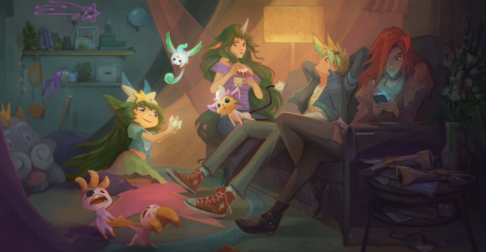

Esto es muy incómodo.
Puedo escuchar cómo la segunda manecilla del reloj de la cocina marca el paso de otro minuto en el que hemos permanecido callados. Ezreal está atrapado en el pequeño sillón entre Fortune (quien aún escribe en su teléfono) y Soraka, quien observa en silencio a Lulu mientras mordisquea un rollo de canela. Janna y Poppy están sentadas en las rígidas sillas del comedor que Lulu arrastró desde la otra habitación. Lulu está recargada en la mesa de centro, doblando un pedazo de papel en una forma compleja. No tengo idea de qué está haciendo, pero su suave tarareo es el único sonido presente, además del reloj.
Y yo, bueno, estoy desgastando la alfombra con mis vueltas.
La primera en romper el silencio es Fortune. Deja de escribir, profiere un suspiro de desagrado y finalmente deja su teléfono boca abajo contra su regazo, las pequeñas pistolas que cuelgan de un extremo tintinean ruidosamente. Echa un vistazo, analizando toda la habitación: desde el patrón descolorido de las cortinas hasta el sillón beige por primera vez. Su decepción es evidente. Mientras se hunde en el cojín detrás de ella, Ez se inclina hacia delante.
''¿Hacen esto con frecuencia?'', pregunta. ''¿Juntarse así?''
Poppy y Janna lo miran fijamente. Poppy aún no comprende porqué él fue elegido como un Guardián. Sigo repitiéndole que la Estrella Prima elige a cada uno de nosotros por algún motivo. Ella se cruza de brazos y lo observa, evidentemente sin estar convencida.
''Sí, ¿tu equipo no lo hace?'', pregunta Janna. Por lo menos, hacia el exterior, aparenta estar tranquila, pero hay una brisa tenue que recorre la habitación, a pesar de que el ventilador del techo no está encendido. Puedo distinguir que ella está igual de nerviosa que yo por su presencia.
''Ahri...'', comienza Ez y después dirige su mirada hacia Fortune. Fortune desvía la mirada, su flequillo perfectamente ondulado se sacude mientras mueve su cabeza. ''Bueno...'', continúa Ez. ''Ahri prefiere salir, estar donde haya gente. Ella no es muy hogareña y le parece que la mayoría de los problemas tampoco lo son''.
Genial. Piensan que somos personas hogareñas y aburridas. ¿Podría esto ser peor?
''¿Es por eso que ella y Syndra no vinieron? ¿Tienen algo mejor que hacer?'', pregunta Poppy, su pie da golpecitos en la silla con un ritmo impaciente. Janna se paraliza con la mención de Syndra.
Soraka interviene e intenta cambiar el tema. ''Su amiga, la que tiene largas trenzas pelirrojas...''
''La ruidosa'', interrumpe Fortune. ''La que tiene un lanzacohetes''.
''Sí, la que tiene bombas de brillantina'', dice al final Soraka. ''¿Vendrá esta noche?''
''¿Jinx? Siempre llega elegantemente tarde''. Miro mi reloj. ''Le encanta hacer una entrada triunfal''. Apenas termino de decir las palabras cuando la puerta frontal se abre y se cierra estruendosamente. Escucho el sonido familiar de una bolsa con Shiro, Kuro y un puñado de juegos pirotécnicos golpeando el suelo del corredor.
''¡Luxy-Pu! ¡Carillón! ¡Panquecito!'', dice Jinx mientras comienza a entonar una canción. ''¡Ya llegué!''
Jinx se dirige hacia la sala en el preciso momento en el que Lulu termina triunfante el último doblez de su proyecto. Jinx baja sus lentes de sol hasta el borde de su nariz. Afuera está oscuro. Oscureció hace más de una hora. ''Parece que empezaron la fiesta sin mí''. Jinx sonríe, evidentemente disfrutando que toda la atención esté centrada en ella, hasta que su mirada encuentra a Ez recostado en medio del sillón.
''Ah, él también vino'', dice ella, y el entusiasmo la abandona como un globo que se desinfla rápidamente. Ella tira del lazo que Lulu lleva en su cabello y se concentra en lo que parece ser una pinza de papel gigante en las manos de la joven Guardiana. ''¿Qué tienes ahí, Lups?''
Lulu retira su mano de los dobleces de papel y abraza a Jinx por la cintura. ''Necesito otro número''.
Detengo mi caminar para echar un mejor vistazo al objeto con forma de estrella que hizo Lulu. Es un adivino de papel. No veía uno desde la primaria. Los números en las solapas muestran cuántas veces el adivino debe de abrirlo y cerrarlo, y el último número elegido revela algún destino misterioso. Mi suerte siempre terminaba en desgracia. Tal vez porque siempre he jugado con Jinx.
''Cuatro'', digo. Tal vez el proyecto de papel de Lulu pueda terminar rápido.
''Doce'', dice Jinx.
''Doscientos cuarenta y seis'', dice Fortune. Su sonrisa de satisfacción está de regreso.
''Doscientos cuarenta y seis será''. Lulu le sonríe a Fortune y toma una pluma de la mesa de centro para garabatear el número en una de las solapas. Lulu se sienta a los pies de Soraka y le ofrece el oráculo de papel, animándola a elegir un número y comenzar el juego.
''¿También se trenzan el cabello entre ustedes?'', pregunta Fortune con su mirada posada en Lulu y Soraka, sus palabras escurren sarcasmo.
''No...'', comienzo a decir.
''A veces'', dice Poppy al mismo tiempo, apresurándose a defender a la desprevenida Lulu. Janna asiente con entusiasmo.
Ugh. ¿Qué acaso ninguna puede disimular?
''Lo que quiero decir es... no, no todo el tiempo. No nos trenzamos el cabello entre nosotras todo el tiempo'', tartamudeo. ''Quiero decir, discutimos asuntos del equipo. Asuntos importantes de Guardianas Estelares''. Toso. ''Ya saben, como salvar el universo''.
''Y trenzarnos el cabello entre nosotras'', añade Poppy con sinceridad.
Fortune desvía la mirada y regresa a su teléfono.
''¿Qué les parece si omitimos lo usual de las pijamadas y hablamos sobre asuntos serios de Guardianas Estelares?'', propongo.
''Aburriiiiiido'', contesta Jinx. Ella observa a Lulu, quien abre y cierra lentamente el adivino de papel para Soraka. ''¿Qué les parece si jugamos un juego más ágil con más consecuencias?'' Escucho como Shiro y Kuro despiertan.
Ezreal aplaude y frota sus manos con entusiasmo. ''Suena peligroso, cuenten conmigo''.
''Genial. Comencemos''. Jinx sonríe, pero rápidamente se dirige a Ez. ''Verdad. O. Reto. ¿Es verdad que tienes intenciones románticas con nuestra Luxanna?''
''¡Jinx!'', grito.
Ez abre la boca como un pez varado en la playa. Claramente no estaba preparado para este juego en particular.
''Verdad'', dice Janna estruendosamente, disipando la energía creciente en la habitación, como si apagara una vela. Todas las cabezas se vuelven hacia ella.
''Ez tiene que contestar'', dice Jinx, mirando como Ez se sonroja.
''El primer voluntario es el primero en participar'', dice Poppy. ''Esa es la regla''.
''Está bien'', dice Jinx, con una insatisfacción evidente. ''¿Es verdad que tienes más años que el martillo de Poppy?''
Veo cómo la mirada de Janna va de Jinx hacia Poppy. Jinx está encantada de ver cómo Janna está momentáneamente nerviosa, mientras que Poppy toca de manera distraída el mango del martillo colocado contra su silla. Por un momento, la mirada de Janna se centra en Soraka y después continúa. ''Falso''.
Poppy observa su martillo con nuevo asombro y respeto.
''¿En verdad?'', pregunta Jinx, levantando una ceja. ''Pero es cierto que el martillo de Panquecito tiene más personalidad, ¿no es así?''
''Jinx, no puedes hacerle otra pregunta'', señala Poppy. ''Es el turno de Janna de preguntar. Esa es la regla. Janna, adelante, ¿a quién vas a elegir?''
''A Soraka'', dice Janna con amabilidad. ''¿Verdad o reto?''
Soraka estaba justo a la mitad de su rollo de canela, mirando con atención a Lulu, quien abría y cerraba el adivino de papel mientras contaba en voz baja. Shisa se sienta en el hombro de Soraka, vigilando toda la operación con un gesto de concentración y, en un principio, totalmente confundida sobre lo que está haciendo Lulu, pero con la intención de asegurarse de que se realice con la máxima eficiencia. Sin saltarse ni un solo número, y para la aprobación satisfecha de Shisa, Lulu empuja su codo contra la rodilla de Soraka, avisándole que la mencionaron en el juego grupal.
''Sí'', dice Soraka sonriendo, un poco distraída. ''Esa soy yo''.
''¿Verdad o reto?'', repite Poppy, tomando muy en serio su rol autoimpuesto de árbitro en el juego.
''Eh... verdad'', contesta Soraka.
Janna se toma un minuto para pensar. ''¿Qué recuerdas...?''
''Bueno'', interrumpe Soraka, muy entusiasmada de estar incluida en el juego. ''Ezreal y yo fuimos a la Pastelería Pantheon por la mañana. Me comí un rollo de canela. Él eligió un café helado, sin leche porque a su barriguita no le gustan los lácteos...''
Poppy chasquea la lengua. ''Janna, tiene que ser una pregunta que comience con '¿es verdad que...?'''.
Soraka se incorpora en el sillón, coloca sus piernas debajo de ella y aguarda. Céfiro llega flotando desde el comedor y se acurruca en el regazo de Janna. Ella posa su mano sobre su acompañante, una ligera brisa hace crujir su pelaje.
''Soraka''. La cadencia de Janna es lenta y tranquila, casi apenas sobrepasando un susurro. ''¿Es verdad que puedes recordar una época en que la Primera Luz estuviera completa?''
''Oh, sí''. Soraka asiente con todo su cuerpo. ''Quiero decir, es verdad''.
La habitación queda absorta en un silencio inquietante. Ella mira a su alrededor. Todos la estamos observando fijamente. Jinx ni siquiera puede recordar qué almorzó el día de hoy. Incluso Poppy y Lulu apenas pueden hablar de lo que sintieron cuando fueron llamadas. Le he preguntado a Janna sobre la Primera Luz, particularmente sobre su directriz, pero los recuerdos, incluso para ella, son nebulosos y rotos.
''Esperen, ¿soy la única que puede recordarlo?'' La voz de Soraka titubea un poco. ''Pero...''
''Tienes que elegir a una persona a la cual le quieres preguntar algo, Soraka'', la interrumpe Poppy, recordándole las reglas del juego. ''Y tienen que elegir verdad o...''
''Ya entendimos, Chiquita'', interviene Jinx, cambiando el tema antes de que Janna o yo podamos hacerle más preguntas a Soraka sobre sus recuerdos. Tendré que encontrar un momento libre para hablar con ella después.
''Es mi turno de elegir. De acuerdo, mmm...'' Soraka se muerde el labio inferior y se da vuelta sobre su asiento para mirar de frente a Ezreal. ''Ez. ¡Escojo a Ez!''
''No es justo. Yo quería elegir a Ez'', dice Jinx, enfadada.
Poppy sacude la cabeza. ''Ya fue tu turno''.
''Señoritas, por favor. Hay suficientes aventuras para continuar'', dice Ez mientras coloca ambas manos detrás de su cabeza al tiempo de reclinarse sobre el sillón. Fortune saca uno de los pequeños cojines que estaban detrás suyo, lo ablanda y lo lanza hacia el sillón y hacia Ezreal, desinflando (literalmente) sus aires de grandeza. Suelto una risita dentro de uno de los guantes de horno que aún llevo puestos.
Ez se sonroja y trata de recuperar con gracia la respiración.
''Reto'', se ahoga en las palabras. ''Escojo reto''.
''Te... reto... a...'' Soraka hace una pausa entre cada palabra, observando a Poppy, para cerciorarse de que lo esté haciendo bien. Poppy asiente. Ez espera ansioso. ''Te reto a que hagas esa cosa que haces'', dice, finalmente.
Ez se encoge de hombros, sin entender de qué está hablando Soraka.
''Ya sabes, esa cosa que haces. Con Yuuto'', continúa Soraka, aplaudiéndole emocionada. ''Y el portal ese''.
''Ah, eso. Bien. Claro que puedo hacerlo''. Ez abre su mochila y toca la parte azul brillante de su emblema de Guardián. ''Oye, amigo... Despierta. Es hora de la función''.
''¿Portales? Eso suena peligroso'', pregunta Poppy mientras un médium mágico de alas blancas salta a la habitación. Brinca en el aire, sus alas se extienden, sus ojos azul brillante son iguales que los de Ezreal.
''Los portales son peligrosos. Muy peligrosos. Pero, por suerte para ustedes, yo estoy aquí. E igual esto no es del todo un portal. Técnicamente, es un atajo para llegar a otra dimensión''. Ez dirige hacia Poppy una mueca torcida y comienza a mirar alrededor de la habitación. Fija su mirada en un sujetalibros de cerámica negra y en una pequeña planta en maceta. ''Soraka, ¿crees que ese sujetalibros servirá para una demostración de un poco de magia arcana?''
Soraka sacude su cabeza y frunce la nariz. Entre las vueltas de trinos de Yuuto, puedo escuchar a Lulu concentrada profundamente.
''Doscientos cuarenta y cuatro. Doscientos cuarenta y cinco'', cuenta. ''¡Doscientos cuarenta y seis!'', anuncia triunfalmente. ''Listo, Soraka''. Lulu agita el oráculo de papel alrededor de su mano.
''¡La fabricante de fortuna!'' Soraka deja escapar una risita. ''Casi lo había olvidado''.
''¡Así es que fabricante de fortuna, entonces!'', dice Ez. ''Yuuto, vamos. Es hora de dar una verdadera demostración de lo que es la habilidad''.
Yuuto se arquea en el aire, girando hacia Ez. Pareciera que Yuuto se va a estrellar contra Ez, pero en el último minuto, Ez y Yuuto se mezclan, otorgándole a Ez un juego brillante de alas blancas que ocupan toda la habitación. Menos de un segundo después, Ez desaparece a través de un portal titilante para reaparecer merodeando sobre Lulu. Le arrebata el adivino de papel de las manos.
''Préstamelo solo por un segundo'', dice y, un momento después, se acomoda en el sillón, reclinándose cómodamente contra los cojines, ya sin sus alas y con Yuuto, que ronronea felizmente. Desdobla la solapa y lee en voz alta la fortuna. '''La oportunidad no podrá tocar si no construyes una puerta'. Eh. Me gusta, Lulu''.
Poppy gruñe. ''Lo copió de las galletas para llevar de anoche''.
''Esa no es su fortuna'', dice Lulu. Con un movimiento, señala la solapa de la derecha. ''Es la siguiente''.
Ez desdobla la segunda solapa y la lee para todo el grupo. ''Solo en la oscuridad la luz podrá brillar''.
''La Estrella Prima me dijo eso'', mencionó Lulu.
''¿La Estrella Prima habla contigo?'' Fortune ladeó su cabeza, en señal de incredulidad. ''¿Todavía?''
''Sí'', una sonrisa serena se dibujaba en el rostro de Lulu. ''Ezreal, cuando abres un portal como ese, ¿adónde dijiste que vas?''
''Oh-oh'', susurró Ezreal.
''¿Qué es, 'oh-oh', campeón?'' Jinx se inclina hacia Ez mientras él batalla por conservar el papel doblado.
''Tal vez necesitemos deshacernos de esto''. Ez sonrió débilmente. ''Mejor dicho, ahora mismo''.
Antes de que nadie atendiera esa sugerencia, el oráculo de papel salta de las manos de Ez. Da vueltas alrededor de la habitación como una hoja otoñal poseída. Un chillido agudo comienza a crecer. Parece que viene del adivino de papel.
Se dobla y desdobla una decena de veces, hasta que arroja una pequeña criatura rechoncha y brillante de color negro y verde. Todos están de pie.
''¿Acabas de traer un molesto demonio interdimensional viajero a la sala de Lux usando tu poder del portal que no-es-un-portal?'', pregunta Jinx, mirando al monstruito rebelde saltar del apoyabrazos del sofá a la alfombra.
''Puede ser'', susurra Ez. ''La magia arcana no viene con un instructivo''.
''Genial'', dice Jinx.
Ez me mira, leo que sus labios dicen la palabra Perdón.
''Esto solo había sucedido una vez antes'', menciona.
Fortune le da un codazo a Ez.
''De acuerdo'', rectifica, ''puede ser que esto haya ocurrido más de una vez. Tal vez seis o siete veces, pero no es gran cosa''.
La criatura se sube a la mesa de centro. Lo único que puedo ver es el martillo de Poppy balancearse hacia atrás con amplitud. Cruje la madera y la mesa de centro se hace añicos. Claramente, jamás podrá repararse. La oscura figura sale disparada, ilesa.
Janna se pone de pie, sus brazos se levantan en dirección a la criatura. Se empieza a formar una brisa, removiendo los escombros de la mesa de centro y volando las páginas de uno de los libros que estaba sobre ella tan solo unos momentos antes.
''Yo me encargo, Janna''. Jinx está regresando del pasillo, Shiro y Kuro le pisan los talones.
''No'', dice Fortune. Giro mi cabeza para ver una de las brillantes pistolas blancas de Fortune a la altura de mi rostro.
''Cuidado, Sarah. No tan rápido. Estás demasiado cerca, ¿no lo crees?'' Ez trata de acercarse para hacer que baje sus armas. Siento cómo mi estómago se revuelve mientras me inunda la adrenalina. Este era su plan desde un principio. Se acabó mi suerte. Va a matarme.
''Fortune...''
Las palabras apenas salen de mis labios antes de que escuche cómo tiran de un gatillo.
''Es hora de decir adiós'', anuncia. Se escucha un estallido como el de un globo. Mis manos se posan sobre mi nariz y mis ojos, revisando si todo está intacto y en su lugar. Un segundo después, el demonio ya no existe, delicados pedacitos de papel comienzan a caer sobre todos mientras el adivino de papel se convierte en confeti. Parece como si estuviera nevando en mi sala. Lulu está bailando sobre ello, por supuesto.
''¡Miren, ahora sí que es una fiesta!'', exclama. Shiro y Kuro se revuelcan en los restos de la mesa de centro, mientras que Shisa luce muy perturbada por cómo se deleitan con la destrucción sin sentido.
Por desgracia, mi alivio al saberme completa no duró mucho tiempo. Una molesta alarma comienza a chillar mientras una brumosa neblina se expande por toda la casa, proveniente de la cocina.
''Huele a quemado'', dice Jinx.
Oh, no. ¡La cena!